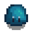
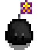
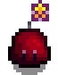

Schleime
| Schleime | |
 | |
| Information | |
| Auftauchen: | Minen |
| Stockwerk: | 1-120 |
| Besiegbar: | ja |
| Basisgesundheit: | variiert |
| Basisschaden: | variiert |
| Basisverteidigung: | variiert |
| Geschwindigkeit: | 2 |
| Erfahrungspunkte: | variiert |
| Variationen: | Grüner Schleim, Frost Schleim, Roter Schleim, Lila Schleim, Schwarzer Schleim, Tigerschleim |
| Beute: | Nach dem Erreichen des Grunds der Minen: |
- Dieser Artikel ist über das Monster. Für die Monsterbeute, siehe Schleim.
Schleime sind Feinde, welche an verschiedenen Orten angetroffen werden, wie den Minen und die Geheime Wälder. Es gibt sie in 5 verschiedenen Varianten, die sich vom äußeren in ihrer Farbe unterscheiden. Du musst 1000 Schleime töten um ein Monsterjagdziel zu bekommen. Es zählen alle Schleime.
Schleime können in einem Schleim-Stall, mit Hilfe eines Schleimbrutkasten gezüchtet werden.
Jede Variante der Schleime hat einen einzigartigen Status Effekt.
Angriff

Alle Schleime haben eine Angriffszone von 4 Feldern in jede Richtung. Betritt ein Spieler diese Zone, wird der Schleim angreifen.
Schleime greifen auf zwei Arten an, entweder hüpfen sie langsam zum Spieler oder sie machen sich für einen großen Sprung bereit, um von dort auf den Spieler zu springen. Wenn sich der Schleim zum Sprung bereit macht, sieht es so aus, als wäre der Schleim flach auf dem Boden. Ist ein Hinderniss im Weg, so wird der Schleim davon abprallen (manchmal auch mehrfach, wenn sie in einem engen Raum sind). Es kann passieren, dass ein Schleim in Rage kommt, nachdem es angegriffen wurde, dadurch können sie sich schneller bewegen und haben rote Augen.
Wird man von einem Schleim getroffen, verliert man Gesundheit und erhält den Buff zugeschleimt.
| Bild | Name | Effekt | Ursache | Dauer |
|---|---|---|---|---|

|
zugeschleimt | Getroffen von einem Schleim. |
Strategie
Wenn ein Schleim getroffen wird, wird es außerhalb des Nahkampfbereiches zurückgestoßen. Die beste Strategie sie zu töten ist es, ihnen schnell hinterher zu kommen, um ihren Angriff zu verhindern. Am besten ist es sie in eine Ecke zu treiben. Der normale Angriff und der Sprungangriff können verhindert werden durch eine verteidigende Haltung (wie das blocken mit dem Schwert). Wird das Blocken mit dem Schwert gut getimet, so wird dem Schleim schaden zugefügt. Ansonsten ist Angriff die beste Verteidigung.
Der Schleim-Charmeurring verhindert den Schaden von Schleimen. Diesen Ring erhält man als Belohnung für das Töten von 1000 Schleimen von der Abenteurergilde.
Männliche Schleime
Jeder Schleim hat eine 49%ige Wahrscheinlichkeit männlich zu sein und erhält dadurch spezielle Eigenschaften. Männliche Schleime haben einen Schwanz, 25% mehr Gesundheit und +1 Schaden. Wenn er in einem passiven Zustand angegriffen wird, hat er eine 2,5%ige Chance seinen Angriff um 50% zu erhöhen und macht eine schüttel Animation.
Es gibt eine sehr kleine Wahrscheinlichkeit, dass sich ein männlicher und ein weiblicher Schleim in den Minen paaren und einen kleine Schleim produzieren. Solche werden auch von den Großen Schleimen produziert.
In einem Schleim-Stall, können sich männliche und weibliche Schleime paaren, um einen kleinen Schleim zu produzieren dieser wird dann zu einem normalen Schleim heranwachsen.


Variationen
Grüne, Blaue, Rote und Lila Schleime können ein Schleim-Ei fallen lassen, sobald ein Schleim-Stall auf dem Hof gebaut wurde.
| Beute | |||||||
|---|---|---|---|---|---|---|---|
|
|
Grüner Schleim | ||||||
| LP | Schaden | Verteidigung | Geschwindigkeit | EP | Vorkommen | ||
| 24 | 5 | 1 | 2 | 3 | Minen (Ebene 1-39) | ||
| Notiz: | |||||||
|  | Blauer Schleim (Frost Schleim) | ||||||
| LP | Schaden | Verteidigung | Geschwindigkeit | EP | Vorkommen | ||
| 106 | 7 | 0 | 2 | 6 | Minen (Ebene 41-79, kann manchmal auch auf anderen Ebenen auftauchen) | ||
| Notiz: | Jeder aufgeladene Sprung Angriff erhöht die Chance, dass sie Anfangen zu Glühen und die Geschwindigkeit zu erhöhen um 0.0025% | ||||||

|
Roter Schleim | ||||||
| LP | Schaden | Verteidigung | Geschwindigkeit | EP | Vorkommen | ||
| 205 | 16 | 0 | 2 | 10 | Minen (Ebenen 81-119) | ||
| Notiz: | |||||||

|
Lila Schleim | ||||||
| LP | Schaden | Verteidigung | Geschwindigkeit | EP | Vorkommen | ||
| 410 | 16 | 0 | 2 | 10 | Schädelhöhle (1%) | ||
| Notiz: | Dies sind die stärksten Schleime. | ||||||

|
Gelber Schleim | Original Schleim Beute Farben bezogene Beute (siehe Tabelle unten) | |||||
| LP | Schaden | Verteidigung | Geschwindigkeit | EP | Vorkommen | ||
| variiert | variiert | variiert | 2 | variiert | Minen, Schädelhöhle | ||
| Notiz: | 0.1% Chance die Farbe zu jedem anderen Schleim zu verändern(auch besonders und niedlich), behält dabei aber seine Eigenschaften (*LP, *Schaden, Monsterbeute und Niedlichkeit) | ||||||

|
Schwarzer Schleim | Original Schleim Beute Farben bezogene Beute (siehe Tabelle unten) | |||||
| LP | Schaden | Verteidigung | Geschwindigkeit | EP | Vorkommen | ||
| variiert | variiert | variiert | 2 | variiert | Schleim-Stall | ||
| Notiz: | In einem zufälligen Ereignis nach dem du zu Bett gegangen bist, kann eine Hexe über deinen Schleim-Stall fliegen und dabei alle Schleime in schwarze Schleime verwandeln. Dies beeinflusst jedoch nur die Farbe. | ||||||

|
Kupfer Schleim | ||||||
| LP | Schaden | Verteidigung | Geschwindigkeit | EP | Vorkommen | ||
| 102 | 16 | 0 | 4 | 10 | Steinbruchmine, Zufällige Verließ-Ebenen in den Minen | ||
| Notiz: | |||||||

|
Eisen Schleim | ||||||
| LP | Schaden | Verteidigung | Geschwindigkeit | EP | Vorkommen | ||
| 205 | 16 | 0 | 1 | 10 | Steinbruchmine, Zufällige Verließ-Ebenen in den Minen | ||
| Notiz: | |||||||
Besondere Schleime
Besondere Schleime haben eine kleine Wahrscheinlichkeit einen normalen Schleim zu ersetzen. Sie können an ihrer kleinen Antenne mit einem gelben Stern identifiziert werden.
Besondere Schleime haben 3mal mehr Lebenspunkte, als normale und verursachen doppelt so viel Schaden. Sie können seltene Gegenstände fallen lassen.
| Beute | |||||||
|---|---|---|---|---|---|---|---|

|
Besonderer grüner Schleim |
| |||||
| LP | Schaden | Verteidigung | Geschwindigkeit | EP | Vorkommen | ||
| 72 | 10 | 1 | 2 | 3 | Minen (Ebene 1-40) | ||
| Notiz: | 0.175% Chance jeden Schleim zu ersetzten zwischen Ebene 1-40. | ||||||

|
Dunkelgrüner Schleim |
| |||||
| LP | Schaden | Verteidigung | Geschwindigkeit | EP | Vorkommen | ||
| 72 | 10 | 1 | 2 | 3 | Minen (Ebene 2-39) | ||
| Notiz: | 1% Chance jeden Schleim zu ersetzten zwischen Ebene 2-39, außer Ebene, die auf 0, 1, 5, oder 6 enden. | ||||||

|
Besonderer blauer Schleim Besonderer frost Schleim |
| |||||
| LP | Schaden | Verteidigung | Geschwindigkeit | EP | Vorkommen | ||
| 318 | 14 | 0 | 2 | 6 | Minen (Ebene 40-80) | ||
| Notiz: | 0.175% Chance jeden Schleim zu ersetzten zwischen Ebene 40-80. | ||||||
|  | Besonderer schwarzer Schleim |
| |||||
| LP | Schaden | Verteidigung | Geschwindigkeit | EP | Vorkommen | ||
| variiert | variiert | 0 | 2 | variiert | Minen (Ebene 42-79) | ||
| Notiz: | 1% Chance jeden Schleim zu ersetzten zwischen Ebene 42-79, außer Ebene, die auf 0, 1, 5, oder 6 enden. | ||||||
|  | Besonderer roter Schleim |
| |||||
| LP | Schaden | Verteidigung | Geschwindigkeit | EP | Vorkommen | ||
| 615 | 32 | 0 | 2 | 10 | Minen (Ebene 80-120) | ||
| Notiz: | 0.175% Chance jeden Schleim zu ersetzten zwischen Ebene 80-120. | ||||||

|
Dunkel lila Schleim |
| |||||
| LP | Schaden | Verteidigung | Geschwindigkeit | EP | Vorkommen | ||
| 1230 | 32 | 0 | 2 | 10 | Minen (Ebene 82-119) | ||
| Notiz: | 1% Chance jeden Schleim zu ersetzten zwischen Ebene 82-119, außer Ebene, die auf 0, 1, 5, oder 6 enden. | ||||||
Großer Schleim
Große Schleime verhalten sich genauso, wie die kleineren. Wenn sie getötet werden, teilen sie sich meist in 2-5 kleinere Schleime, welche den Spieler angreifen.
Große Schleime können jede Farbe haben, jedoch sind sie häufig lila und kommen in der Schädelhöhle vor.
Sie geben mehr Kampferfahrung.
|
|
Farbe | LP | Schaden | Verteidigung | Geschwindigkeit | EP | Vorkommen | Beute |
|---|---|---|---|---|---|---|---|---|
| 60 | 6 | 0 | 2 | 7 | Minen, Schädelhöhle |
| ||
| 120 | 5 | 0 | 2 | 14 | ||||
| 240 | 15 | 0 | 2 | 21 | ||||
| 180 | 10 | 0 | 2 | 21 |
Farbbezogene Beute
Eine Ergänzung zur Beuteliste oben. Die Farbe jeder Variation ist zufällig und kann zusätzliche Beute geben, abhängig von der Farbe.
Farbgruppen schließen sich gegenseitig aus und werden in der Reihenfolge aufgeführt, in der das Spiel sie testet. (Zum Beispiel kann ein Schleim in die Kategorien Weiß und Grau fallen, aber Weiß wird zuerst getestet, damit der Schleim Eisenerz und nicht Stein fallen lässt).
Notiz: Die Hintergrundfarbe der Zelle "RGB Werte" in dieser Tabelle veranschaulicht die Farbwerte, die ein Schleim haben kann, um diese Beute zu generieren.
| Farbe | RGB Werte | Beute |
|---|---|---|
| Schwarz | Rot < 80, Grün < 80, Blau < 80 | |
| Gelb | Rot > 200, Grün > 180, Blau < 50 | |
| Rot | Rot > 220, Grün > 90 und < 150, Blau < 50 | |
| Weiß | Rot > 230, Grün > 230, Blau > 230 | |
| Grau | Rot > 150, Grün > 150, Blau > 150 | |
| Lila | Rot > 150, Grün < 50, Blau > 180 |
Geschichte
| Tiere und deren Erzeugnisse | |
|---|---|
| Hühnerstall-Tiere | Dinosaurier (Dinosaurier-Ei) • Ente (Entenei • Entenfeder) • Goldenes Huhn (Gold-Ei) • Hase (Wolle • Hasenpfote) • Huhn (Ei • Großes Ei • Braunes Ei • Großes Braunes Ei) • Schattenhuhn (Schattenei) |
| Stall-Tiere | Kuh (Milch • Große Milch) • Schaf (Wolle) • Schwein (Trüffel) • Strauß (Straußenei) • Ziege (Ziegenmilch • Große Ziegenmilch) |
| Fischteich | Fisch (Fischlaich) |
| Schleim-Stall-Tiere | Schleime (Schleim • Schleimball • Schleim-Ei) |
| Haustiere | Hund • Katze • Pferd |